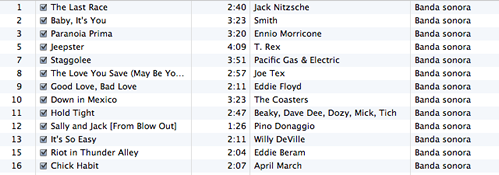

Conoce tus herramientas
Es importante conocer el lenguaje con el que trabajas, y si se trata de un framework conocer todas las posibilidades que nos ofrece para intentar exprimirlo al máximo.
Un ejemplo/anécdota básico de sintaxis (con jQuery) extraído de la vida real.
Queremos hacer una tablita con pijama usando jQuery, para que quede más o menos así

Para ello lo lo que había era una función como esta:
$("table tbody tr").each(function(i){
if(i%2 == 0) {
$(this).css("background", "#F4F7FB");
}
});
Bueno... cumple su función. Tenemos que asumir que siempre hay más de una manera de hacer las cosas. Conocer un poquito más a fondo (no mucho) la API de jquery nos permitiría hacer esto un poquito más compacta.
$("table tbody tr:even").addClass("even");
Por una parte seleccionamos menos elementos sobre los que iterar, y por otra cambiamos el color de fondo añadiendo una clase y dejando la responsabilidad de los atributos de estilo a la CSS.